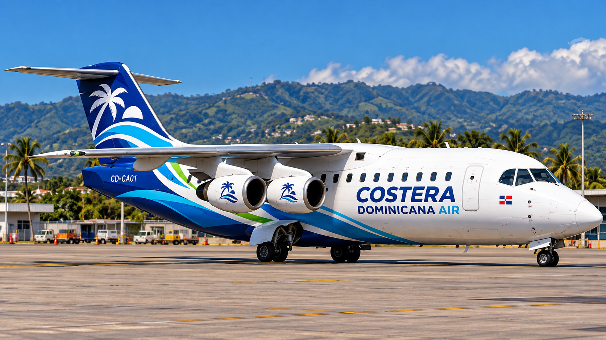

01 / REPÚBLICA DOMINICANASDQ
Santo Domingo
Historia, arquitectura colonial y el corazón de nuestra identidad dominicana.
Capital caribeña · Hub de referenciaUNA AEROLÍNEA VIRTUAL DEL GRUPO NORJET
Conectando la República Dominicana con el mundo, al estilo del Caribe.

CD-CA01 · BAe 146 · FLOTA COSTERASOBRE NOSOTROS
Costera Dominicana Air Virtual nace de la pasión por volar y de la belleza de la República Dominicana. Somos parte del Grupo Norjet y compartimos una misma ilusión: conectar personas, destinos y experiencias a través de la simulación aérea.
Volamos con profesionalidad, espíritu aventurero y orgullo caribeño. Cada ruta es una nueva historia por descubrir.
Descubre el Grupo Norjet →RUTAS QUE INSPIRAN
Descubre algunos de los paisajes y ciudades que inspiran nuestra red de vuelos virtuales. Cada destino, una nueva historia por vivir.
Un Caribe conectado. Las líneas representan conexiones propuestas para la simulación virtual; no indican vuelos en directo.
8 DESTINOS · 7 RUTAS
Historia, arquitectura colonial y el corazón de nuestra identidad dominicana.
Capital caribeña · Hub de referencia
Playas de arena blanca, aguas turquesas y el espíritu luminoso del Caribe.
Costa este · Escapada tropical
Fortalezas históricas, calles llenas de color y la energía del Atlántico.
Antillas Mayores · Conexión caribeña
Montañas verdes, costa atlántica y el encanto histórico de la Novia del Atlántico.
Costa norte · Gregorio Luperón
Bahías tranquilas, montañas tropicales y naturaleza exuberante.
Península nordeste · El Catey
Cultura, tradición y el dinamismo del corazón del Cibao.
Interior dominicano · Aeropuerto Cibao
Marinas, cultura costera y rincones llenos de sabor caribeño.
Costa sureste · La Romana
Arquitectura de colores, puerto histórico y una mezcla cultural única.
Caribe neerlandés · Isla de CuraçaoFotografías y fuentes: Santo Domingo · Punta Cana · San Juan · Puerto Plata · Samaná · Santiago · La Romana · Willemstad. Consulta cada fuente para ver autoría y licencia de uso.
Los destinos y códigos se muestran con fines de simulación aérea. La inclusión de un destino no implica una ruta real ni una operación comercial.
COSTERA DOMINICANA AIR VIRTUAL
Una flota versátil y con identidad caribeña para conectar el Caribe con el mundo, en el entorno de la simulación aérea.
ORGULLO DOMINICANO · PASIÓN POR VOLARAERONAVE SELECCIONADA
CD-CA05
Pasajeros / Carga · Largo recorrido
El trirreactor de largo alcance aporta carácter y capacidad a las operaciones virtuales de Costera, conectando el Caribe con destinos lejanos.
Las matrículas CD-CA son identificadores internos de la flota virtual; no representan matrículas oficiales de aeronaves reales.
Modelo utilitario previsto. Su incorporación y matrícula virtual se confirmarán más adelante.
OPERACIONES VIRTUALES
Estamos preparando esta sección. Más adelante añadiremos los widgets y la información de operaciones, sin prisas.
MÁS QUE VOLAR
Una comunidad virtual construida alrededor de la aviación, el compañerismo y el placer de descubrir nuevos cielos.
Vuela con nosotros →UNA FAMILIA, MUCHOS HORIZONTES
Costera Dominicana Air Virtual comparte familia con Norjet Skyways. Dos identidades, una misma pasión por la aviación virtual.
Visitar Norjet Skyways ↗NOVEDADES DE COSTERA
Este espacio se activará más adelante con noticias de la aerolínea virtual.
TU PRÓXIMA AVENTURA EMPIEZA AQUÍ
Pronto compartiremos novedades sobre la tripulación y las operaciones virtuales.